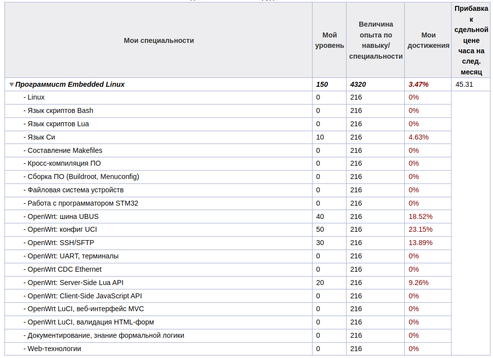

4. Regelungen zur Teamarbeit › Vergütung und Mitarbeiterprogramme › Kurzfassung
Die Regelung beschreibt das in der Entwicklungsabteilung angewandte Vergütungssystem. Sein Ziel: das Gehaltswachstum planbar und transparent zu machen, indem es an die durch Tagesberichte belegte Erfahrung des Mitarbeiters gekoppelt wird.
Wörtlich: von lat. acceleratio — Beschleunigung.
Im Kontext der TeamTime-Methodik ist Akzeleration eine Form der Vergütung, deren wesentliches Merkmal die stetige Erhöhung des Gehalts in Abhängigkeit von der im Fachgebiet gesammelten Erfahrung ist.
Im Folgenden verwenden wir dafür den Begriff „TeamTime-Akzeleration“.
Die TeamTime-Akzeleration ähnelt mehreren bekannten Vergütungsformen, stimmt aber mit keiner überein.
hRate = Function(eduYears, eduQuality, seniorityYears, timerecordMonths, skillHours)| Kennzahl | Bedeutung |
|---|---|
| hRate | Stundensatz für den Leistungsanteil (in Rubel); |
| eduYears | Jahre fachbezogener Ausbildung (5 für Hochschule, 3 für Fachschule); |
| eduQuality | Durchschnittsnote im Abschlusszeugnis (3 bis 5; Diplom mit Auszeichnung = 5); |
| seniorityYears | gesamte Berufserfahrung im Fachgebiet beim Eintritt in das Unternehmen; |
| timerecordMonths | Betriebszugehörigkeit, nicht in Kalendermonaten, sondern in tatsächlichen Stunden gerechnet: 120 Stunden = 1 Monat; |
| skillHours | Erfahrung in den Fertigkeiten des Fachgebiets (0 bis N, wobei N = 0 für Studierende; N ≥ 720 für Junior; N ≥ 1440 für Middle; N = 2880 für Senior). |
Unten steht ein Entwurf der Formel. Tariftabelle (Stundensätze R je Stufe) und Koeffizienten legt die Geschäftsleitung fest; die Werte der Koeffizienten sind Beispiele.
Rbasis = RStufe + (Rnächste − RStufe) × (skillHours − HStufe) / (Hnächste − HStufe)H bezeichnet hier den skillHours-Schwellenwert einer Stufe. Für die Stufe Senior gilt Rbasis = RSenior; über weiteres Wachstum entscheidet die Führungskraft.
KBildung = 1 + 0,02 × eduYears × (eduQuality − 3) / 2. Beispiel: Hochschule mit Auszeichnung ergibt KBildung = 1,10, Fachschule mit Durchschnittsnote 4 ergibt KBildung = 1,03.KZugehörigkeit = 1 + 0,01 × min(timerecordMonths / 12; 5), also bis +5 % über fünf Jahre.Endgültiger Stundensatz:
hRate = Rbasis × KBildung × KZugehörigkeitDie Kennzahl skillHours erfasst die Erfahrung in den Fertigkeiten des Fachgebiets und beeinflusst den Stundensatz am stärksten. Es zählen nur Stunden, die durch Tagesberichte über erledigte Aufgaben belegt sind; daher ist das Gehaltswachstum an geleistete Arbeit gebunden.
Wie das funktioniert, zeigen am besten Beispiele.
Der Praktikant beginnt ohne Erfahrung (skillHours = 0) und absolviert ein Praktikum von zum Beispiel 6 Monaten. Bei einer Norm von 120 Stunden im Monat sind das 720 Stunden, sodass er nach einem halben Jahr die Stufe Junior erreicht. Während dieser Zeit wächst sein Stundensatz jeden Monat gemäß der Tariftabelle.
Im Vorstellungsgespräch wird das Eingangsniveau an Wissen und Erfahrung anhand der Fertigkeitenliste des Fachgebiets ermittelt. Angenommen, dem Kandidaten wird ein Startwert skillHours = 720 zugewiesen. Nach einem halben Jahr (weitere 720 Stunden) erreicht er die Stufe Middle, bis dahin wächst sein Stundensatz monatlich nach der Tariftabelle der Stufe Junior.
Im Vorstellungsgespräch wird das Eingangsniveau an Wissen und Erfahrung anhand der Fertigkeitenliste des Fachgebiets ermittelt. Angenommen, dem Kandidaten wird ein Startwert skillHours = 1440 zugewiesen. Nach einem Jahr (weitere 1440 Stunden) erreicht er die Stufe Senior, bis dahin wächst sein Stundensatz monatlich nach der Tariftabelle der Stufe Middle.
